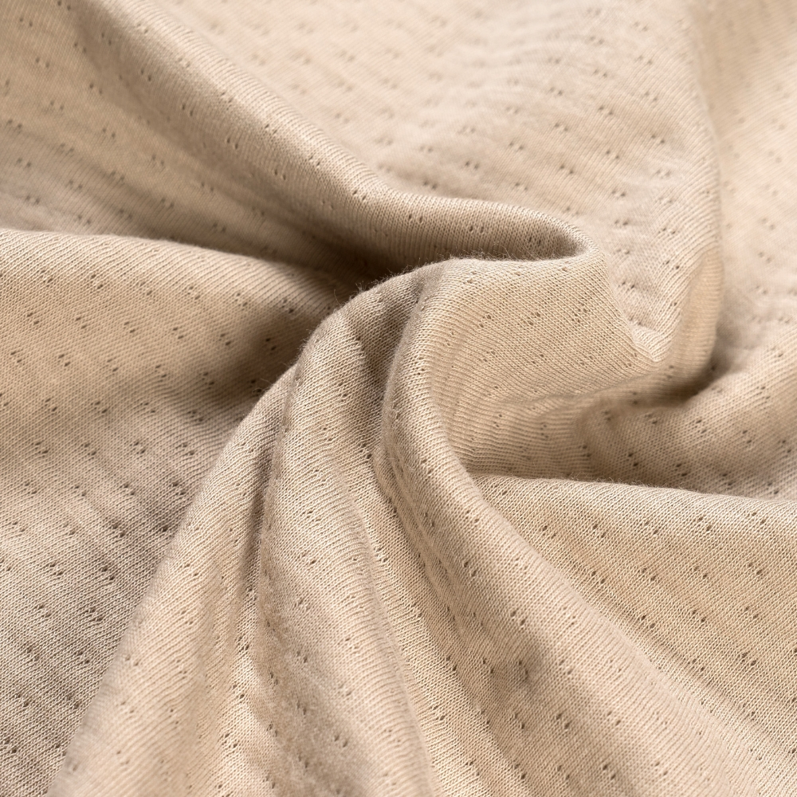

Fabrics
썬데이허그 원단이 특별한 이유
아기의 하루를 감싸는 원단,
얼마나 다를 수 있을까요?
썬데이허그는 밤부, 메쉬,
트리플 — 세 가지 고유한
소재로
아이에게 가장 잘 맞는 선택을 도와드려요.
얼마나 다를 수 있을까요?
썬데이허그는 밤부, 메쉬,
트리플 — 세 가지 고유한
소재로
아이에게 가장 잘 맞는 선택을 도와드려요.
밤부 코튼
밤부 60%
코튼 40%
부드럽고 튼튼해요
코튼 메쉬
코튼 97%
나일론 3%
통기성이 좋고 가벼워요
트리플 밤부
밤부 60%
코튼 40%
부드럽고 따뜻해요



Fabric Guide
CARE NOTE
밤부 코튼 vs 메쉬
밤부 코튼은 사계절 만능 소재이자 차가운 성질 덕분에 에어컨 바람에도 아기를 포근하고 적당한 온도로 지켜줍니다. 코튼 메쉬는 통풍에 특화되어 더울 땐 시원하지만, 실내 냉방이 강한 한여름에는 밤부 코튼과 함께 사용해 보세요.
트리플 vs 밤부 코튼
밤부 트리플은 겨울철은 물론 에어컨이 강한 여름에도 뛰어난 보온성과 포근함을 제공합니다. 반면 일반 밤부 블렌딩은 간절기부터 여름 전후까지 부드럽고 경쾌하게 활용하기 좋아요.